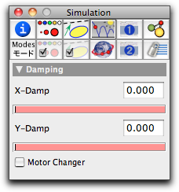

Bouncer

 |  |
||
| Starting a mass in a polygonal region | The trace of the mass |
Bouncers are also essential for many physically oriented games that one might be interested in implementing in CindyLab, such as billiards and table tennis. The following picture shows a simple scenario in which bouncers and Gravity are combined.
 |
| A ball on a staircase |
Inspecting Bouncers
The bouncer inspector is almost identical to the Floor inspector.
 |
| The bouncer inspector |
In addition, it has a checkbox Motor Changer. If this box is checked, the animation direction of the internal spring actuators will be reversed whenever a particle hits the bouncer. For details on the actuation see Spring and Environment. This behavior would be very useful in the construction of walking engines that reverse their direction whenever they hit a wall.
Bouncers and CindyScript
Like any CindyLab object, a bouncer provides several fields that can be read and set by CindyScript. The following list shows the accessible fields for bouncers:
| Name | Writeable | Type | Purpose |
xdamp | yes | real | handle to the X-damp factor |
ydamp | yes | real | handle to the Y-damp factor |
simulate | yes | bool | turn on/off simulation for the floor |
Page last modified on Saturday 03 of September, 2011 [10:32:28 UTC].
The original document is available at
http://doc.cinderella.de/tiki-index.php?page=Bouncer